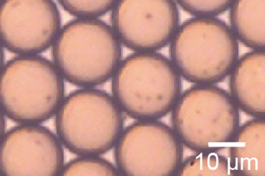
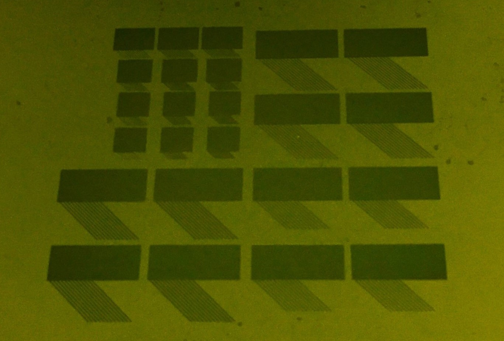

Seungman Choi
Tel: +82-10-4405-7581
Email: seungman@kaist.ac.kr
Projects
Publications
Education
Contact
About me
I'm a technical researcher in the Mechanical Engineering Research Institute, Korea Advanced Institute of Science and Technology (KAIST), advised by Prof. Seung-Woo Kim & Prof. Young-Jin Kim.
My current research interests are "EUV & X-ray coherent diffraction imaging", "Light-matter nonlinear intercation" and "Surface-plasmon polariton & metamaterial".
I received B.Eng and M.S degrees from Tokyo Institute of Technology in 2017 and 2019, respectively.
Research Projects
EUV beam control
Although EUV radiation has been a growing research field of interest due to its wavelength-scale high resolution,
EUV light displays high absorption rate in almost all existing material, requiring an usage of unique reflective multilayered optics and hindering its applications in itself.
Our mission is to demonstrate robust EUV beam control method, e.g. EUV beam scanning and focusing without any help of EUV optics.
Based on noncollinear high harmonic generation scheme and a solid sample, the new table-top EUV light source was successfully developed.
It exhibited robust controllability of EUV beam propagation via wavefront modulation of the driving laser beams.
In addition, by spatio-temporally overlapping two driving annular beams with different converging angle at the sample, tight focusing of EUV annular beam as a form of bessel beam can also demonstrated (~400 nm focal spot).
We are preparing for submission to journal.
Dynamic EUV scanning
EUV spectral control & optimization
High harmonic generation is high nonlinear frequency upconversion process that requires intense ultrafast laser. Therefore, any kind of degradation in drving laser intensity should be carefully considered. By compensating for the phenomenon contributing to the decrease in its intensity, so called propagation effect, further amplification of the EUV yield can be acheived. Our results showed not only exceptional increase of overal harmonic yield, but also selective amplification for certain harmonic in solid sample. This research exhibits potential for internal electron dynamics analysis and attosecond science. Our journal is now under review.

EUV spectral optimization via feedback control
Tunable droplet generation
We demonstrated a mechanically and directionally tunable elestic device that enable to actively control droplet breakup.
In microfluidics, step emulsification has been attracting much attention; because it can easily scaleup the droplet formation based on its insensitivity to flow fluctuation.
However, since its droplet formation is fully geometry-dependent, active control for its size cannot be simlply achieved by flow control.
We envisioned a droplet generating stystem dealing with both mass production and size cotrollability,
via soft materials allowing its nozzles' shrinkage and expansion.
Applying tensile stress on the device, we changed the nozzles' geometry and accordingly tuned some degree of the droplet size.
We are preparing for submission to journal.

Monodisperse droplets
Electrostatic Gripper for flexible material
My bachelor thesis was to develop an electrostatic force-driven gripper with a structure of beam-array, offering sophisticated solution for gripping flexible materials. Due to its high applicability to targets with various size and arbitrary surface profile, the possiblity of being alternative way to grip soft mater had been widely explored and investigated. However, it was also known that precise arrangement of multilayer electrodes demands high precision of manufacturing and limits its performance. We demonstrated simple alternate wet & dry etching process via a single photo-mask, which enable to process the multilayer thin films in the exactly same shape. The developed dipolar-electrostatic gripper was free from alignment problems and as a result, it displayed improved performance in terms of adhesive force. The study was published in 2018.

Electrostatic gripper module fabrication
Publications
International Journals
- (In Preparation) B. Kim*, S. Choi*, Y. W. Kim, Y.-J. Kim and S.-W. Kim, “Opticsless Control of Extreme Ultraviolet Beam based on High Harmonic Generation from Solids.” *equally contributed to this work.
- (In Preparation) S. Choi, N. Tottori, T. Nisisako, “Soft Step Emulsification for Actively-tunable Droplet.”
- (Under Review) Y. W. Kim*, B. Kim*, S. Choi*, H. K. Nam, H. Kim, Y.-J. Kim and S.-W. Kim, “Spectral Control of High Harmonic Generation via Tailoring Pulse Propagation in Solids.” *equally contributed to this work.
- S. Choi, K. Wakabayashi, S. Saito, “Development of Bipolar Electrostatic Chuck Module having Array of Beam Assembly using Lithography Technique”, Journal of Micromechanics and Microengineering, 28.12: 125011, 2018.
Patent
- T. Nisisako, S. Choi and N. Tottori, "マイクロ流路乳化デバイス", Application num.: 2018-036016, Patent num.: 2019-150748.
International Proceedings
- S. Choi, Y.W. Kim, B. Kim, H.K. Nam, Y.-J. Kim and S.-W. Kim, “High Harmonic Generation from Bulk Crystals using Tailored Driving Femtosecond Laser Pulse”, 2020 International Symposium on Precision Engineering and Sustainable Manufacturing (PRESM 2020) , Online Symposium, Nov. 15-18, 2020.
- S. Choi, N. Tottori and T. Nisisako, “Mechanically and Directionally Tunable Soft Step Emulsification”, The 22nd International Conference on Miniaturized Systems for Chemistry and Life Sciences (MicroTAS2018) , Kaohsiung, TW, Nov. 11-15, 2018.
- S. Choi, K. Wakabayashi and S. Saito, “Development of Bipolar Electrostatic Chuck Module having Array of Beam Assembly using Lithography Technique”, 2017 Materials Research Society Fall meeting (MRS 2017) , Boston, MA, USA, Nov. 26-Dec 1, 2017.
- S. Choi, N. Tottori, R. Zhang and T. Nisisako, “A Soft and Disposable Step-emulsification Device for Generating Monodisperse Emulsions and Particles”, The 7th International Conference of Asian Society for Precision Engineering and Nanotechnology (ASPEN 2017) , Seoul, Korea, Nov. 14-17, 2017.
Grants & Awards
Grants
- ITO Educational Foundation Scholarship (JPY 180,000 per month)
Apr 2017 – Mar 2019
ITO Foundation for International Education Exchange, JP. - Foreign Tour Business Grant (JPY 197,000 once)
Aug 2018
The Precise Measurement Technology Promotion Foundation (PMTP-F), JP. - Korea-Japan Join Government Scholarship (JPY 130,000 per month)
Apr 2013 – Mar 2017
The Korean Government and The Japanese Government, KR&JP.
Awards
- Excellence Award
Feb 2019
Korean Scientists and Engineers Associaton in Japan (KSEAJ), JP. - MutoEiji Award (Acamemic Excellence Award in mechanical engineering department)
Mar 2017
The Japan Society for Design Engineering (JSDE), JP.
Educational Background
- M.S. in Mechanical Engineering
Apr 2017 – Mar 2019
Tokyo Institute of Technology, Tokyo, Japan
Thesis: Elastically deformable soft step emulsification for actively-tunable droplet.
Advisor: Prof. Takasi Nisisako - B.S. in Mechanical and Intelligent Systems Engineering
Apr 2013 – Mar 2017
Tokyo Institute of Technology, Tokyo, Japan (GPA 3.69/4.00)
magna Cum Laude in 4 years (Top 10%)
Thesis: Development of bipolar electrostatic chuck module having array of beam assembly using lithography technique.
Advisor: Prof. Shigeki Saito - Preparatory Education
Apr 2012 – Mar 2013
Korea-Japan Joint Government Scholarship Program
Kyunghee University and Tokyo Institute of Technology
Study about japanese, basic physics and mathematics for 6 months at each institute.
Contact Information
Seungman Choi
Technical ResearcherLabaratory for Precision Engineering and Metrology (PEM),
Mechanical Engineering Research Institute,
Korea Advanced Institute of Science and Technology (KAIST),
335 Gwahangno, Guseong-Dong, Yuseong-Gu, Daejeon 305-701, Republic of Korea
Tel: +82-10-4405-7581
Email: seungman@kaist.ac.kr